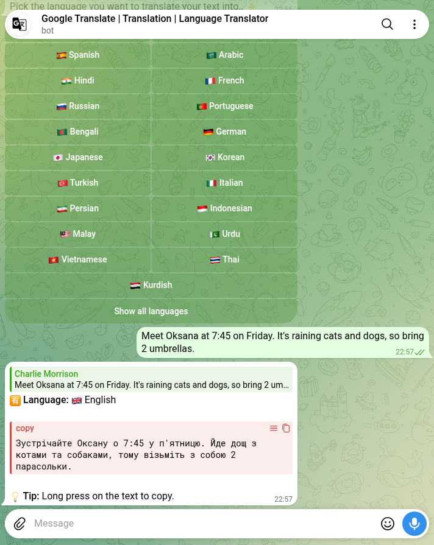

Telegram Translator Bots: 78 Tested, 7 Translated
Three of the translator bots Telegram’s search returned on 16 October are called “Google Translate”. A fourth is called “Yandex Translate” and shows 39,664 monthly users. None of them has the verified badge, and neither does any of the other 74.
I wanted to know what you actually get when you send one of these bots a message. Not the feature list in the bio, the reply. So I wrote one test sentence before I opened any bot and sent the same sentence to every bot that answered /start:
Meet Oksana at 7:45 on Friday. It’s raining cats and dogs, so bring 2 umbrellas.
It has a name, a time, a weekday, a number and an idiom. Each one is a known way machine translation goes wrong. Then I sent the bots that translated it a Ukrainian version with the Ukrainian idiom for heavy rain, “ллє як з відра” (“it pours as if from a bucket”), to see if they could go the other way.
How I tested
- Corpus. 14 Telegram searches: translator bot, translate bot, translator, translate, voice translator, group translator, chat translator, language translator, google translate bot, deepl, translate video, translate pdf, and the Ukrainian and Russian words for “translator”. That gave 77 bots. I looked for web lists that name bots by @handle and found almost none on 16 and 17 October, so the 78th bot, @TranslateBot_io_bot, is the one bot a web search named that wasn’t already in the 77.
/start, then 10 seconds. Silent bots stayed silent.- The English sentence, then 15–25 seconds. No buttons pressed. I re-read every reply later, because several bots post “⏳ Processing” and edit it into the translation.
- Language menus. Four bots asked for a language first. I opened their full menus, recorded whether Ukrainian was there, and then picked a language.
- Ukrainian sentence to the 10 bots that replied to the English one with text.
One account, with its Telegram interface in English. Text only: I didn’t send voice messages, photos or PDFs, and I didn’t join any channel a bot asked me to join.
The results
| What came back | Bots | What that means |
|---|---|---|
Silent on /start | 40 | Nothing within 10 seconds, including the web pick, TranslateBot.io |
Answered /start, ignored the sentence | 11 | Including “Yandex Translate” (39,664 monthly users), which is built for groups |
| Translated it without being asked | 7 | All seven into Russian |
| Wall before translating | 5 | Four want a channel subscription, one wants you to accept a “Public Offer” |
| Language menu first | 4 | Tested separately, below |
| Something odd | 3 | An echo, an English-to-English “translation”, and a Georgian transliteration |
| Voice or video only | 3 | They said so and asked for a voice message or an MP4 |
| Paused or private | 3 | “This bot is on pause”, “Access denied”, and a whitelist message in Chinese |
| Not a translator | 2 | A library of translated magazine issues, and a cinema app’s login assistant |
That’s 78. Ten bots did something with the sentence on their own, and four more did after I picked a language. 0 of 78 are verified.
Every bot that guessed a language picked Russian
My account’s interface is English, and I wrote to the bots in English. The seven bots that translated without asking all went into Russian. One said why: “По умолчанию я перевожу на русский”, “by default I translate into Russian”. Another put “EN -> RU” above its answer.
That matters if you’re looking for a translator in English. Most of the bots in Telegram’s results are built for Russian speakers translating out of English and back. You have to find the setting, or a different bot.
The quality was better than the default. Four of the seven caught the idiom: two wrote “Льет как из ведра”, the Russian equivalent, one wrote “проливной дождь” (“pouring rain”) and one “сильный дождь” (“heavy rain”). Every one of the seven kept Oksana, 7:45 and Friday. Two wrote out the 2 as a word, which is fine.
The other three translated the idiom word for word: “Идет кошачий и собачий дождь”, a rain of cats and dogs. Those three gave the same answer letter for letter, which brings me to families.
Four names, one bot
@perevodchik_bot (13,820 monthly users), @perevod_bot (8,776) and @Dengi_bot all sent the same Russian translation, the same “📌 Save this bot, it will come in handy” line and the same button legend. When I sent the Ukrainian sentence, all three answered “It’s pouring like a bucket, so take 2 umbrellas”. A fourth, @language_translator_bot, gave that exact English sentence too. In the first pass it had echoed my English back unchanged, which makes sense once you know its target language is English.
So that’s four bots and one engine, and the engine translates idioms literally in both directions. If one of them doesn’t work for you, the other three won’t either.
The same goes for walls. @Pdf2_translatebot and @TRANSLATORO_BOT both answered with the same Arabic message, “you must subscribe to the bot’s channel to use it”, and the same invite link. Two names, one owner, one channel.
The menus: Ukrainian was there in two of four

Four bots answered the sentence with a menu. I read each menu to the end before pressing anything.
- @AITranslateUABot is the only Ukrainian-first bot in the test. It speaks Ukrainian, translates both ways between Ukrainian and 36 languages, and sorts them by region. I picked Western Europe, then English. The answer: “Зустрінься з Оксаною о 7:45 у п’ятницю. Ллє як з відра, тож візьми дві парасолі.” That’s the right Ukrainian idiom, the name in the right case, the time and the weekday. It was the best translation in the test, and it adds a button that reads the result out loud.
- @i_Translatebot shows 21 languages, then 62 behind “Show all languages”. Ukrainian is in the long list. The translation is in the screenshot above. It read “Meet Oksana” as “welcome Oksana” and the idiom as weather with animals in it.
- @easy_voice_translator_bot works in fixed pairs. I went through both pages, 48 pairs in all. 25 of the 48 include Russian, and none includes Ukrainian. There’s an “Add language” button I didn’t try.
- @translatesms_bot is really a tool for Georgian text messages typed in Latin letters. It offers RU, EN and “Decode translit” on whatever you send. I pressed EN on the Ukrainian sentence and got “We’ll meet with Oksana at 7:45 on Friday. It’s pouring rain, so take 2 umbrellas.” That’s correct, from a bot that doesn’t claim to know Ukrainian.
Ukrainian to English: three got it
The 10 bots that had replied with text got the Ukrainian sentence. What came back:
- By sense: @translategooglero_bot (“It’s pouring rain”) and @Translator_Chat_GPT_bot (“It’s pouring rain, so bring two umbrellas”).
- Idiom for idiom: @TranslatorToAnyLanguage_bot turned the Ukrainian bucket into “raining cats and dogs”. It was the only bot that swapped one idiom for the matching one. The same bot had “translated” my English sentence into English, changing only “2” to “two”.
- Literal: the four-name family, “pouring like a bucket”.
- Into Russian instead: @kartuli_translator_bot correctly said “this is probably Ukrainian” and then translated it into Russian.
- Refused: @translator_language1_bot replied “✅ The text is already in Russian, no translation needed.” It isn’t.
- Echoed: @translate_from_georgian_bot sent the Ukrainian back unchanged. In the English pass it had written my English in Georgian letters: “მეეთ ოქსანა ათ 7:45 ონ ფრიდაყ”, which is “Meet Oksana at 7:45 on Friday” spelled out, not translated.
Running a group with people who speak different languages?
The free Party Game runs Truth or Dare, Never Have I Ever and Would You Rather as a Mini App inside Telegram, in English or Ukrainian, depending on your Telegram language. Nothing to add to the group, no channel to join.
Open the Party Game For bots worth adding to a group, see the group bots I tested.The brand names
The three “Google Translate” bots behaved in three different ways. @TranslateBoT (10,315 monthly users) answered /start with “⚠️ Subscribe to use the bot”. @i_Translatebot is the literal one in the screenshot. @translategooglero_bot translated well, defaulted to Russian, and is the only one whose bio is specific about it: “Translate provided by Google API”, developed by a studio it names. Using an API is not the same as being Google.
“Yandex Translate”, @YTranslateBot, is the biggest bot in the results by a margin: 39,664 monthly users, more than the next three combined. Its welcome message is written for a group: “I will translate all messages in this chat so that all people can understand each other.” In a private chat it greeted me and ignored the sentence. I didn’t add it to a group, so I can’t tell you how it does there.
The third-biggest was @deeplexbot (11,224 monthly users). It turned up in the search for “deepl” and has nothing to do with DeepL: it’s the login assistant for a cinema app, and it answered /start by assigning me a login.
Group translators read everything
A bot that translates a group chat has to see the messages. By default, Telegram bots in groups run in privacy mode and only receive commands, replies to them and a few other messages. Privacy mode “can be disabled so that the bot receives all messages like an ordinary user”, and bots added as admins “always receive all messages”.
Telegram tells clients whether a bot reads all group messages, and 14 of the 78 do. That includes @YTranslateBot and three of the four-name family. That’s how the feature works, not a scandal. But it means everything said in the group goes to whoever runs the bot, and none of these 14 is verified. Think about that before you add one to a work chat.
You might not need a bot
Telegram has its own Translate button. It was added on 30 December 2021: “Enabling Translation in Settings > Language adds a dedicated Translate button to the context menu when selecting a message.” The same post says it works on Android and on iOS 15 and later, and that the available languages depend on your phone’s operating system. Translating whole chats and channels as they arrive is on Telegram’s list of Premium features.
That’s what the documentation says. I didn’t test the built-in button, so I can’t compare its idioms with the bots’. If all you need is to read one message from a friend, try it before you pick a bot from a list of 78 with no badges.
What I didn’t test
- Voice, photos, video and PDFs. Three bots only take voice or video. Several others say they translate photos and files. I only sent text.
- Groups. I added no bot to a group, so the group-first bots, Yandex Translate included, are only tested in private.
- Walls. I didn’t join any channel or accept any offer, so I don’t know what those five bots do after.
- Languages beyond English, Ukrainian and Russian. One sentence, two directions.
A bot that was silent on 16 October may answer next week, and one that worked may start asking for a channel.
How to pick a translator bot in two minutes
- Ignore the brand in the name. Three “Google Translate” bots behaved three different ways, and none of the 78 is verified.
- Send a sentence with an idiom in it. “Raining cats and dogs” separates a translator from a dictionary in one message.
- Check the target language before you trust the result. All seven bots that guessed went into Russian.
- Read the whole menu. On @i_Translatebot, Ukrainian only appears after “Show all languages”. On @easy_voice_translator_bot it isn’t there at all.
- If one bot fails, don’t try its twin. Same answer letter for letter means the same engine.
- Be careful with group translators. They read every message in the chat.
Game night without another bot
The Telegram Party Pack is plain text you paste into the chat: 110 Truth or Dare, 45 Never Have I Ever, 30 Would You Rather, 30 Most Likely To, 25 Paranoia and 15 Story Chain prompts, with ready-made poll blocks and a host guide. Nothing to subscribe to, and no bot reading your group.
Get the pack — $9.99Frequently asked questions
What is the best translator bot on Telegram?
For English and Ukrainian, @AITranslateUABot gave the best translation in this test, with the correct idiom and grammar. For English and Russian, @Translator_Chat_GPT_bot and @translategooglero_bot translated the idiom by sense in both directions. None of the 78 bots tested is verified.
Is there an official Google Translate bot on Telegram?
Three bots in Telegram’s search are named “Google Translate”, and none has the verified badge. One says in its bio that it uses the Google API, which isn’t the same as being run by Google.
Can Telegram translate messages without a bot?
Yes. Telegram added a Translate button in December 2021: turn it on in Settings > Language and it appears in the message menu. Translating whole chats and channels as they arrive is listed as a Premium feature.
Why does my Telegram translator bot reply in Russian?
Most translator bots in Telegram’s results default to Russian. All seven bots that translated an English sentence without being asked went into Russian. Look for a language setting in the bot’s menu, or use a bot that asks you to pick the language first.
Related reading
- Telegram bots for groups, tested
- Fun Telegram bots: 117 opened, 16 work
- Telegram inline bots list: 38 tested, 28 still work
- Telegram music bots: I asked 110 for one song
- Telegram reminder bots: 82 checked, 3 actually remind you
- Telegram AI bots: 91 tested, the only verified one is off
- Telegram converter bots: 96 messaged, 25 did the job